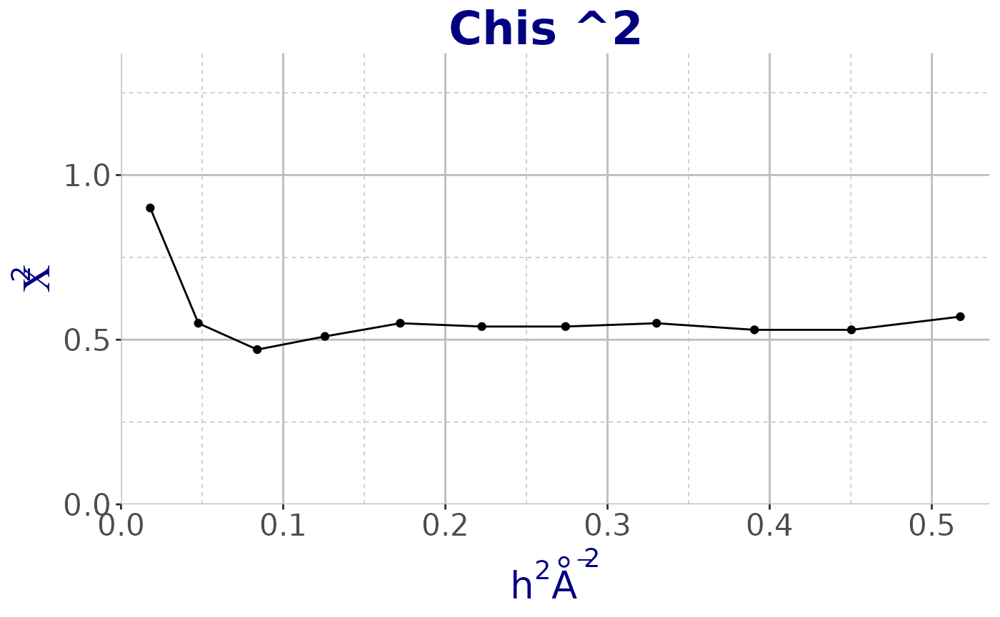

Read SHELXC/D/E log file
SHELX.RmdIntroduction
The aim of this tutorial is to load the content of the log file, in output from SHELXC/D/E, in the workspace and create dataframes that can be used for further analysis or data visualisation. The cry function read_SHELX_log can load in the R working memory all the log files in output from SHELXC/D/E and give in output a dataframe for SHELXC/D and a list of dataframes for SHELXE.
Sample SHELXC/D/E log files.
Some sample files are stored as external data in this package. Among them there are the SHELXC/D/E log files available with the current release. To access the files, first load the cry package.
Next, have a look at what is included in the external-data directory of cry.
datadir <- system.file("extdata",package="cry")
all_files <- list.files(datadir)
print(all_files)## [1] "1dei_phases.mtz" "1dei-sf.cif"
## [3] "2ol9_phases.mtz" "3syu.cif"
## [5] "6vww_xds_ascii_merged.hkl" "AMS_DATA.cif"
## [7] "e-65-00i60-Isup2.rtv" "shelxc.log"
## [9] "shelxd.log" "shelxe_i.log"
## [11] "shelxe_o.log" "xds00_ascii.hkl"SHELXC
Let start to have look at SHELXC log file.
filename <- file.path(datadir,"shelxc.log")
obj_shelxc <- read_SHELX_log(filename)
class(obj_shelxc)## [1] "data.frame"
names(obj_shelxc)## [1] "Res" "N_data" "Chi_sq" "I_sig" "Complete" "d_sig" "CC1_2"Using cry we plot all the classic charts of SHELXC. In the example below we show \(Chis ^2\) vs resolution using the functionplot_SHELX.
plot_SHELX(obj_shelxc, var = obj_shelxc$Chi_sq, type = "shelxc",
title_chart = "Chis ^2") +
theme_cry()
SHELXD
filename <- file.path(datadir,"shelxd.log")
obj_shelxd <- read_SHELX_log(filename)
class(obj_shelxd)## [1] "data.frame"
names(obj_shelxd)## [1] "CCall" "CCweak"Plot CCall vs CCweak using ggplot2
plot_SHELX(filename = obj_shelxd, type = "shelxd") +
theme_cry()
SHELXE
The function read_SHELX_log when reading log files from SHELXE five in output a list of dataframes. The user can choose the data frame to use for further analysis.
## read the two hands log files separately
filename_i <- file.path(datadir,"shelxe_i.log")
obj_shelxe_i <- read_SHELX_log(filename_i)
class(obj_shelxe_i)## [1] "list"
names(obj_shelxe_i)## [1] "CYCLE" "FOM_mapCC" "Site1" "Site2"
cycle_i <- obj_shelxe_i$CYCLE
class(cycle_i)## [1] "data.frame"
names(cycle_i)## [1] "wt" "Contrast" "Connect" "cycle"
FOM_mapCC_i <- obj_shelxe_i$FOM_mapCC
class(FOM_mapCC_i)## [1] "data.frame"
names(FOM_mapCC_i)## [1] "Res" "FOM" "mapCC" "N"
Site1_i <- obj_shelxe_i$Site1
class(Site1_i)## [1] "data.frame"
names(Site1_i)## [1] "Site" "x" "y" "z" "occ.Z" "density"
Site2_i <- obj_shelxe_i$Site2
class(Site2_i)## [1] "data.frame"
names(Site2_i)## [1] "Site" "x" "y" "z" "h.sig." "near" "old" "near.1"
## [9] "new"
filename_o <- file.path(datadir,"shelxe_o.log")
obj_shelxe_o <- read_SHELX_log(filename_o)
class(obj_shelxe_o)## [1] "list"
names(obj_shelxe_o)## [1] "CYCLE" "FOM_mapCC" "Site1" "Site2"
cycle_o <- obj_shelxe_o$CYCLE
class(cycle_i)## [1] "data.frame"
names(cycle_i)## [1] "wt" "Contrast" "Connect" "cycle"
FOM_mapCC_0 <- obj_shelxe_o$FOM_mapCC
class(FOM_mapCC_i)## [1] "data.frame"
names(FOM_mapCC_i)## [1] "Res" "FOM" "mapCC" "N"
Site1_o <- obj_shelxe_o$Site1
class(Site1_i)## [1] "data.frame"
names(Site1_i)## [1] "Site" "x" "y" "z" "occ.Z" "density"
Site2_o <- obj_shelxe_o$Site2
class(Site2_i)## [1] "data.frame"
names(Site2_i)## [1] "Site" "x" "y" "z" "h.sig." "near" "old" "near.1"
## [9] "new"Plot inverted and original hand.
plot_SHELX(filename = obj_shelxe_i, filename_e = obj_shelxe_o,
type = "shelxe") +
theme_cry()